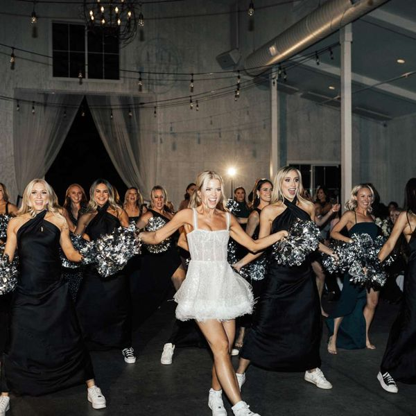

Over the Top Wedding Intros
Show Notes
This week, Penny and Jim are asking the question nobody at the rehearsal dinner is brave enough to ask: When did the wedding reception become a talent show?
We’re talking over-the-top choreographed bridal party entrances, brides doing full-blown dance/cheerleading routines, groomsmen hitting moves they’ve apparently been practicing since the engagement, and bridal parties who have somehow turned “introducing the wedding party” into a Broadway production!
Is it fun and unforgettable… or are we just one costume change away from Dancing with the Stars: Wedding Edition?
Penny and Jim are putting on their judge’s hats, warming up their dance moves, and deciding when a grand entrance crosses the line from “Wow!” to “Please just walk in.”
So grab your popcorn, cue the music, and let’s dance our way into another episode of The Wedding Police! 🚨💃🕺
🚨 Never Miss a Case
New episodes every week. Follow The Wedding Police so the next one lands in your feed.